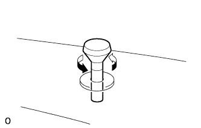
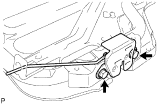

リヤシートASSY(4WD) 分解 |
| 1. リヤシート クッション カバー ＆ パッド取りはずし |
ホグリングをはずし、リヤシートクッションカバー&パッドを取りはずす。
| 2. リヤシートクッションアンダ クロス取りはずし |
リヤシートクッションアンダクロスを取りはずす。
| 3. リヤシート ヘッドレストASSY取りはずし |
リヤシートヘッドレストASSY 2個を取りはずす。
| 4. リヤシート ヘッドレストASSY CTR取りはずし |
リヤシートヘッドレストASSY CTRを取りはずす。
| 5. リヤシートバックストップレリーズ ボタン取りはずし |
|  |
図の方向に回し、リヤシートバックストップレリーズボタン2個を取りはずす。
| 6. リヤシートバック カバー取りはずし |
 |
ルーフモールディングリムーバーを使用してツメのかん合をはずし、リヤシートバックカバー2個を取りはずす。
| 7. リヤシートヘッドレスト サポート取りはずし |
 |
クリップリムーバーを使用して、クリップ5個を取りはずす。
リヤシートバックカバーをめくり、ホグリングを取りはずす。
 |
ツメのかん合をはずし、リヤシートヘッドレストサポートASSY 6個を取りはずす。
| 8. リヤシートバックストップボタン グロメット取りはずし |
 |
マイナスドライバーを使用し、ツメのかん合をはずしリヤシートバツクストップボタングロメット2個を取りはずす。
| 9. リヤシートバック パッドSUB-ASSY(カバー ツキ)取りはずし |
リヤシートバックカバー&パッドを取りはずす。
| 10. リヤシートバツク アンダ クロース取りはずし |
リヤシートバックアンダクロースを取りはずす。
| 11. リヤシートバック ロックASSY RH取りはずし |
|  |
ボルト2本をはずし、リヤシートバックロックASSY RHを取りはずす。
| 12. リヤシートバック ロックASSY LH取りはずし |
ボルト2本をはずし、リヤシートバックロックASSY LHを取りはずす。